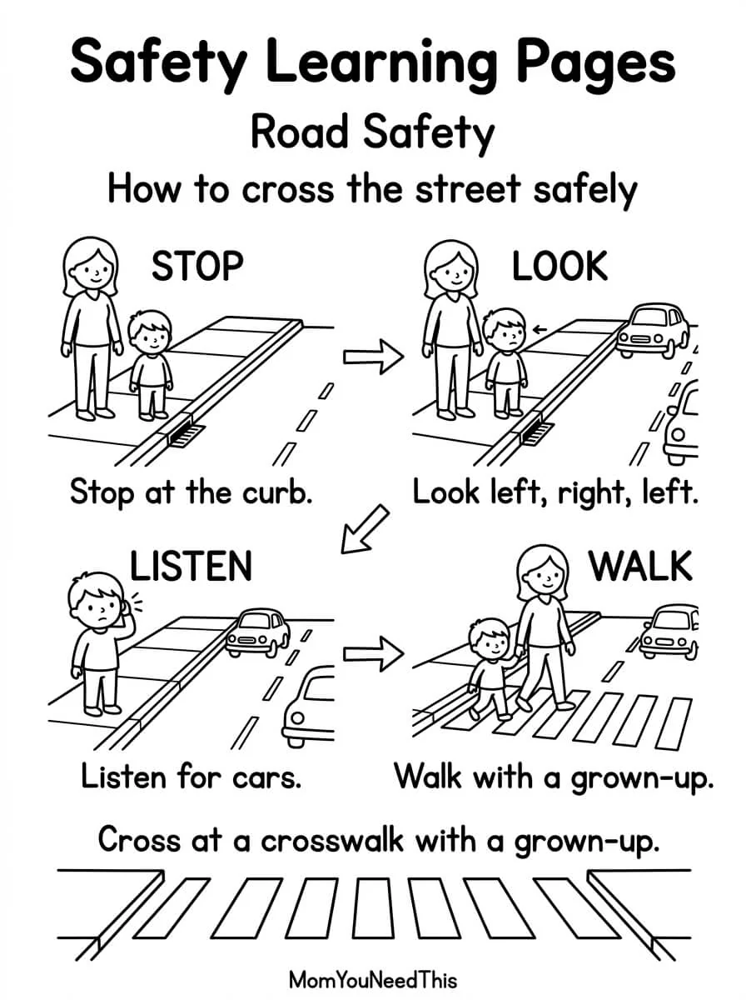

Road Safety Free Printable Road Safety Pages For Kids
Road safety for toddlers and preschoolers is not about traffic theory — it is about five habits practiced until they are automatic: stop at the curb, look and listen, hold a grown-up's hand, cross where drivers expect you, and never, ever play behind a car. These free printable road safety pages teach the habits with pictures and rehearsal, so the routine exists before the real street asks for it.
Young children cannot judge a car's speed or distance reliably — that ability is still developing well into the primary years — which is why the pages never suggest a child can cross alone. What a preschooler CAN learn, thoroughly, is the routine and the vocabulary: curb, crosswalk, signal, sidewalk. The routine is the safety device; the adult is its operator.
Quick Answer
Crossing safely is a habit, not a lecture: these road safety pages teach toddlers and preschoolers five rules — stop at the curb, look and listen, hold a grown-up's hand, cross where drivers expect you, and be seen. One free printable on this page rehearses them with pictures. Print at home, no signup.
At a Glance
- Ages: Toddlers and preschoolers
- Activity: Five road safety habits: stop, look, listen, cross safely, be seen
- Skills: Safety habits and road awareness
- Format: Printable worksheet (PDF)
- Cost: Free, no signup
🚦 Learn Important Road Safety Rules
Use the printable to help your child learn basic road safety skills and start conversations about staying safe when walking, crossing streets, and being around vehicles.
Free Road Safety Printable


How To Use This Printable
- Download and print the road safety pages on letter-size paper.
- Walk through the scenes together — for each picture, ask “what is the safe thing to do here?” and let your child answer before you confirm.
- Rehearse the crossing routine on the page — stop, look left, right, left again, listen — with pointing and chanting, until the order runs by itself.
- Take it to a real, quiet street — hand in hand, same chant, same steps. The page was the rehearsal; the street is where the habit sets.
Why Learn About Road Safety?
Road safety concepts learned at 3 and 4 become the reflexes a child carries at 7 and 8, when the first independent walks begin. The habits are simple enough for a toddler to chant and strong enough to matter for a lifetime: stop, look, listen, hold on, be seen.
Talking through road safety also hands children the vocabulary of the street — curb, crosswalk, signal, driveway, reversing — and vocabulary is what lets a child report danger (“a car is backing up!”) instead of just feeling it. Every walk to the park becomes practice, because the route itself is the curriculum.
🎁 Keep Exploring Free Learning Activities
Discover more printable activities, toddler resources, and learning ideas created for busy parents.
🎁 View All Free Resources🚦 The Five Road Rules Every Little Pedestrian Learns
1. Stop at the curb. Every crossing starts with feet stopped at the edge — never a rolling entry. The curb is the starting line, and starting lines are for standing on.
2. Look left, right, left again. In Canada and the US, traffic comes from the left first — so left is checked twice. Looking means heads turning, not just eyes flicking; make it big and theatrical, it sticks better.
3. Listen. Ears catch what eyes miss: a car around a bend, a truck reversing (that beeping is a message meant for pedestrians), a bicycle's bell. Quiet street does not mean empty street.
4. Cross at crossings, with a hand held. Crosswalks and corners are where drivers expect small people. The walking-person signal means it is pedestrians' turn — the hand signal means wait, even if the road looks empty. And the hand-holding rule has no age exception on these pages: little pedestrians cross attached.
5. Be seen, and never play behind cars. Bright colors in the day, reflective bits at dusk. And the driveway rule, the one most often missed: a driver backing up cannot see a small child behind the car — so driveways and parking lots are walking-with-a-grown-up zones, never playgrounds.
❓ Road Safety Pages FAQ
Is this road safety pages printable really free?
Yes — these road safety pages are 100% free to download and print at home. No signup and no payment needed. Print the rules page for the fridge or the front door — road safety is a daily routine, and the poster earns its place where shoes go on.
What ages is this printable best for?
They are made for toddlers and preschoolers, ages 2–5. Little ones (2–3) learn the words and the hand-holding habit; older preschoolers (4–5) can rehearse the full stop-look-listen routine and name the hazards in each scene. No age on these pages crosses a street alone — the routine is learned with a grown-up's hand attached.
What supplies do we need?
Just the printed pages plus crayons or markers — and, for the final step, one quiet real street and a grown-up's hand. The practice walk is not optional decoration: it is where the paper routine becomes a street habit.
🔗 More Free Printables You’ll Love
- Free Alphabet Coloring Pages Free printable alphabet coloring pages for little learners.
- Free Safety Learning Activity Pages Free printable safety learning activity pages for little learners.
- Free Letter A Formation Practice Free printable letter a formation practice for little learners.
- Free Letter A Sound Match Free printable letter a sound match for little learners.